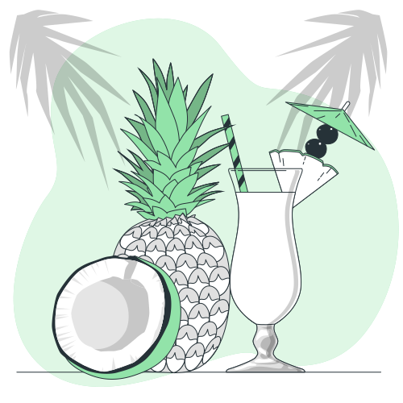
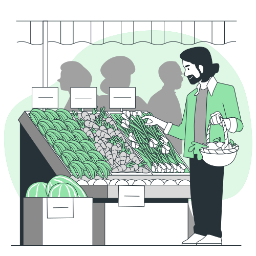
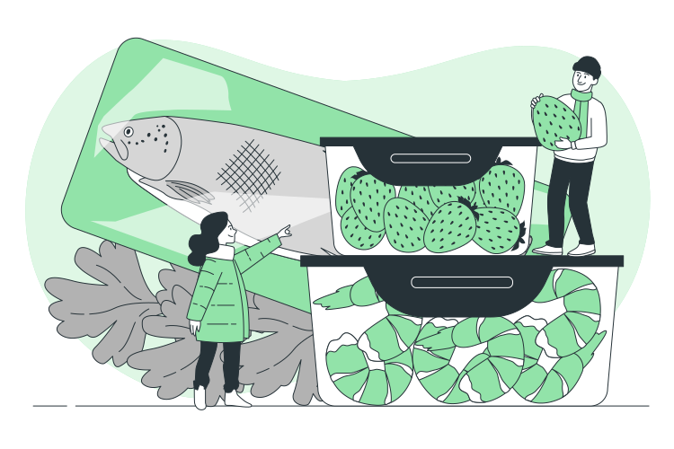

1. Нужно есть по мере необходимости
Из пищи наш организм получает необходимые питательные вещества и энергию. Потребность в них зависит от возраста, пола, образа жизни, состояния здоровья и многих других факторов. Формула проста: нужно есть столько, сколько требует и расходует организм. Энергия расходуется на базовую активность (дыхание, переваривание пищи, мышление, работу сердца и т.д.), но она нужна и для движения. Например, у подростков потребность в энергии значительнее, чем у людей более старшего возраста; во время беременности и грудного вскармливания повышается потребность в питательных веществах; людям физического труда нужно больше энергии, чем офисным работникам. Средняя дневная потребность в энергии составляет 2000 ккал у женщин и 2600 ккал у мужчин.
2. Питайтесь сбалансированно
В питании важна не только получаемая энергия, но и то, чтобы она поступала от разных питательных веществ и пропорция этих веществ была сбалансированной. Каждое питательное вещество играет в организме свою важную роль, и разные группы продуктов содержат разные основные вещества, витамины и минералы. Сегодня многие пытаются, например, сокращать количество потребляемых углеводов, что может стать причиной дефицита некоторых важных питательных веществ.
3. В меру можно есть всё
Распространено заблуждение, что всё вкусное или вредно, или приводит к ожирению. На самом деле всё не так плохо: есть можно всё, но в правильных количествах и с правильной частотой. Пять основных групп продуктов одинаково важны, но пирамида питания показывает пропорции по их количеству. Нужно проявлять особую осторожность с очень соленым, сладким и жирным, а также с алкоголем.
4. Питайтесь разнообразно
В разнообразное и сбалансированное меню должны входить продукты из разных групп, но нужно варьировать продукты и внутри групп. Например, разные овощи и фрукты содержат разные и в разных количествах витамины и минералы. Если питаться разнообразно, можно получать нужные питательные вещества, организм будет более здоровым и станет лучше работать. Очень часто причиной однообразного питания становятся рутина и привычки. Рацион нужно время от времени пересматривать, чтобы всё время не есть одно и то же. Питание может оказаться однообразным и потому, что человек сознательно решил не есть определенных продуктов или они ему не нравятся. В таком случае нужно внимательно следить, чтобы необходимые питательные вещества всё же поступали из других источников.
